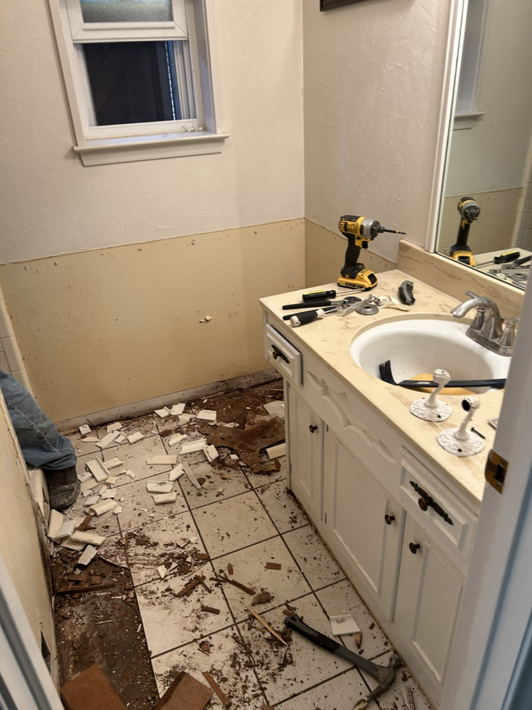
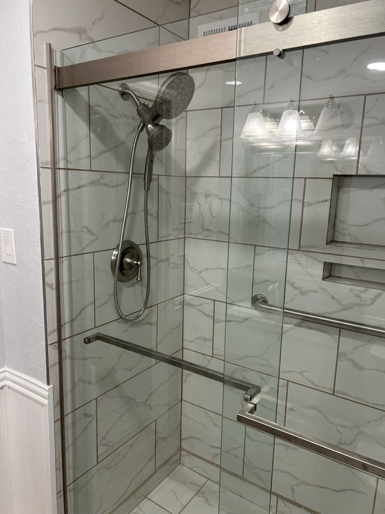
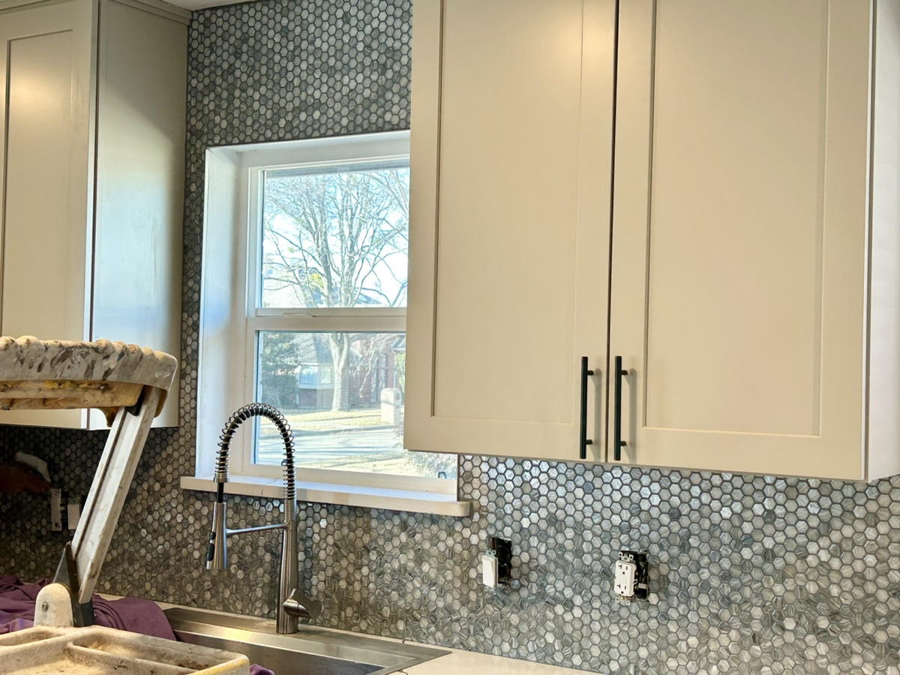
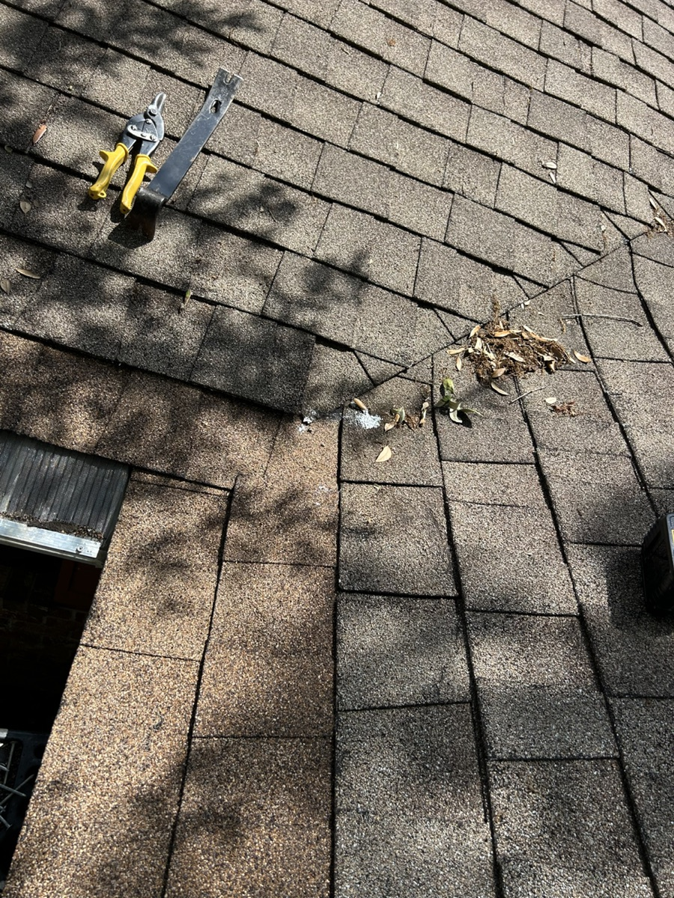
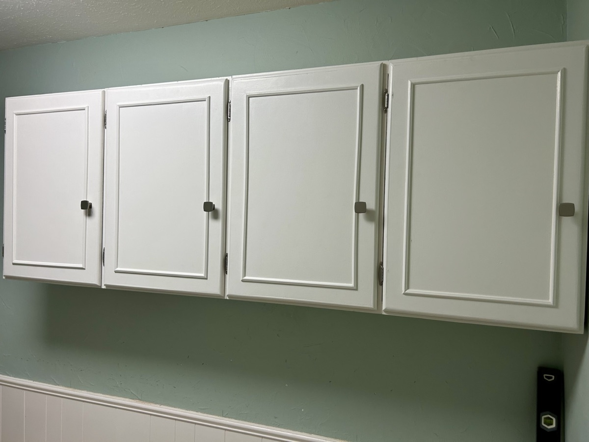
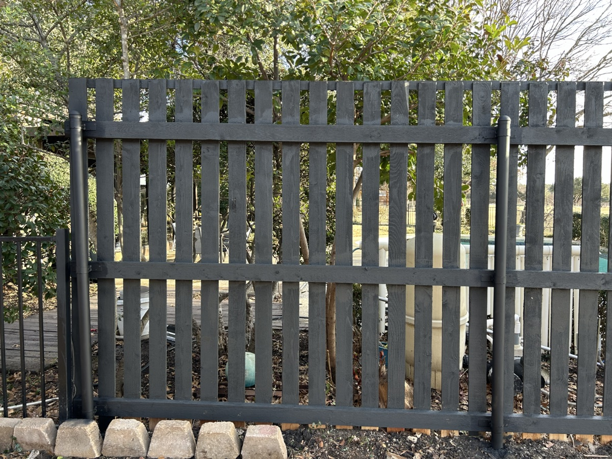
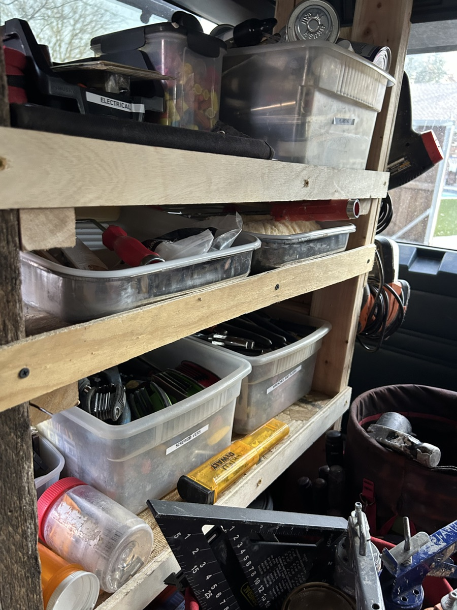

Repairs & Handyman Services
Small repairs, punch lists, and practical fixes handled by a skilled local team you can keep calling.
Richardson, Plano & Far North Dallas
Founded by Frank Piatt and family-led today, Piatt Home Repair & Remodeling helps homeowners repair, update, and improve their homes with skilled work, honest guidance, and local roots.
Referral-driven work
Our business has grown the way Frank built it: by doing careful work for people who call us back and recommend us to neighbors. Many of our customers bring us in for project after project, year after year.
What we help with
Some projects are simple. Others uncover older-home problems, unfinished details, or work that crosses more than one trade. We help homeowners think through the whole job, communicate clearly, and leave the home looking finished.
Small repairs, punch lists, and practical fixes handled by a skilled local team you can keep calling.
Useful improvements for original finishes, dated rooms, and homes that no longer fit daily life.
Thoughtful updates that improve comfort, function, safety, and everyday use.
Practical kitchen, breakfast nook, wet bar, built-in, and interior improvements.
Repairs, inspection punch lists, and useful refreshes before a home goes on the market.
Grab bars, safer showers, threshold fixes, and updates that help people stay comfortable at home.
Older homes need judgment
Many homes in Richardson, Plano, and Far North Dallas were built decades ago. Original finishes, dated layouts, hidden repairs, and work left unfinished by earlier projects can make even a small job more complicated than it first appears.
We bring patience, practical judgment, and a willingness to find the right solution. When a project fits our scope, we help carry it through. When it needs a licensed specialist, we are upfront about that too.
Real work
A few examples from recent repairs, updates, and practical remodels. The goal is not showroom polish. It is proof that Piatt handles real homes with care, solves the problems in front of us, and leaves the work looking finished.



Kitchen update

Repair work

Interior storage

Exterior work
Beyond the first repair
Many home projects do not stop at one trade. A plumbing or electrical repair may leave drywall, tile, trim, paint, or finish work behind. We help homeowners think through the whole job so the repair or update does not leave the home feeling half-done.
Clear communication
We believe homeowners deserve clear communication about scope, assumptions, decision points, and possible unknowns. For larger projects, we help you understand likely budget ranges before work begins.
The Piatt lane
Piatt Home Repair & Remodeling grew through careful work, repeat customers, and neighborly referrals. Today, the business continues as a family-led team helping local homeowners repair, update, and improve their homes with practical judgment and honest communication.

Mobile workshop
When an older van was donated to the business, we gutted it and built the inside into a practical mobile workshop. It is a small example of how we work: use what is solid, solve the real problem, and make the setup fit the job.
Start here
Tell us what you are working on. We will follow up to understand the scope, priorities, and next steps.